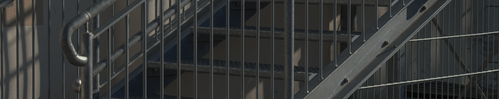

Produsele sunt create precis pe baza unor masuratori efectuate in timp util de catre noi.
Gardurile si portile facute din otel inoxidabil ofera un grad maxim de protectie si eleganta.
Acestea sunt construite din materiale de inalta calitate, care asigura durabilitatea acestora. Folosirea metalului pentru construirea acestora, asigura ca acestea sunt rezistente la intemperii si la uzura naturala. Astfel, investitia ta in aceste produse este una pe termen lung, avand in vedere ca nu vei fi nevoit sa le inlocuiesti sau sa le repari prea curand

Scari
Produsele vin la pachet cu balustrada inclusa in pret.
Scarile, alaturi de grilajele de sustinere sunt de calitate maxima garantata.
In afara de durabilitate si siguranta, scarile metalice au un aspect uimitor. Acestea pot fi personalizate in functie de preferintele tale, astfel incat sa se potriveasca cu designul si stilul proprietatii tale. Scarile sunt disponibile intr-o varietate de modele si culori, astfel incat sa poti alege cel mai potrivit aspect pentru proprietatea ta.
Balustrade
si sisteme de imprejmuire
Balustradele pot fi comandate pentru orice perimetru in limita stocului disponibil.
Balustradele metalice Eisengil nu au nevoie de intretinere. Datorita materialelor de inalta calitate din care sunt construite, si vopsirea in camp electrostatic, acestea nu necesita intretinere. In plus, acestea sunt zincate astfel incat sa poata rezista in timp fara probleme.